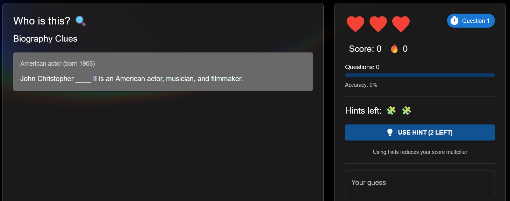
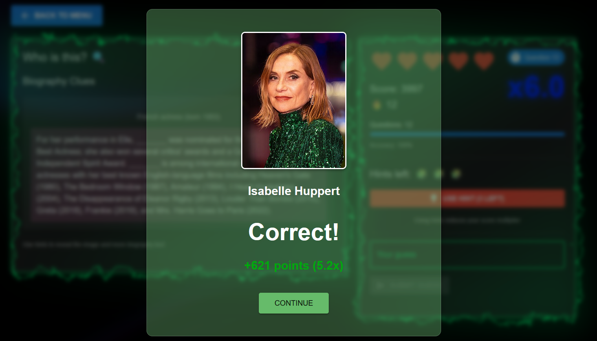
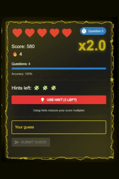
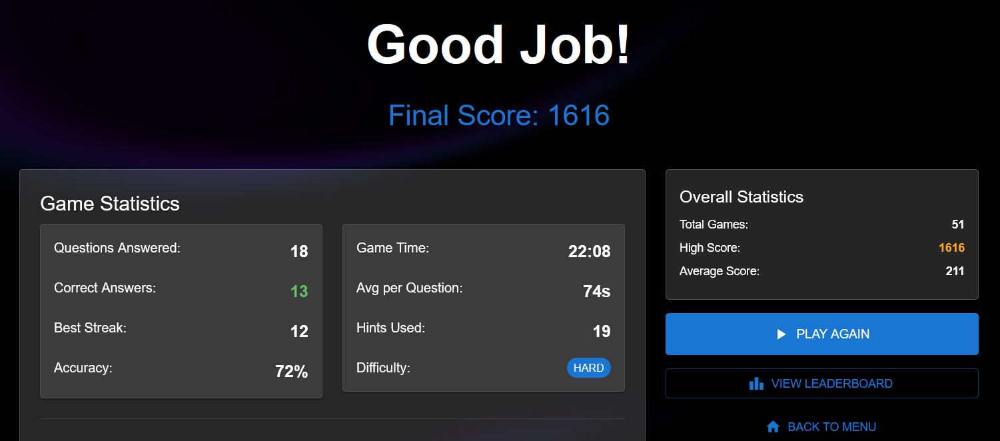
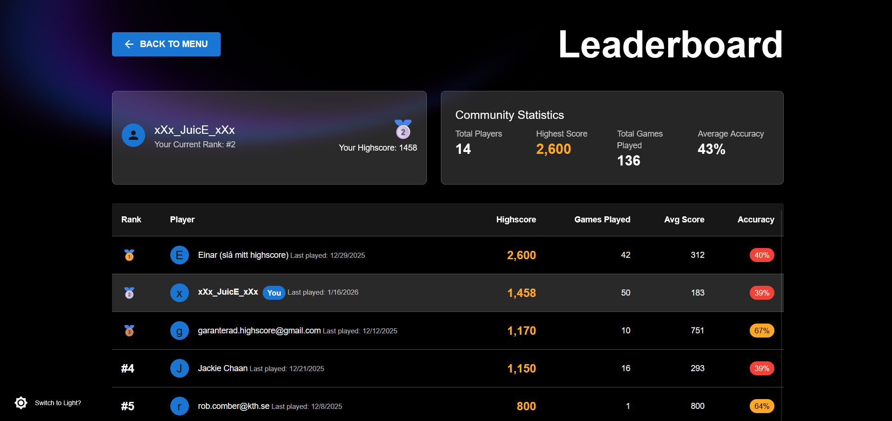
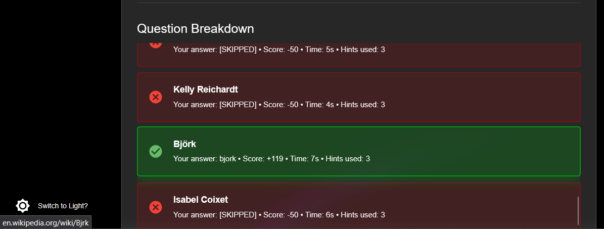

A Wikipedia trivia game
UX Design & Interface Development
Play NowWikiQuest is a celebrity guessing game that challenges players to identify famous people based on Wikipedia clues. Built with React and Material UI, with Redux for state management and Firebase for authentication and data persistence, the game pulls data from the Wikipedia API. This project was developed as part of DH2642 Interaction Programming and the Dynamic Web at KTH Royal Institute of Technology. As the UX lead for this project, I focused on creating an engaging, intuitive experience that keeps players informed and motivated throughout their gameplay session.
The interface was designed following established Human-Computer Interaction principles to ensure users always feel in control and informed about their progress.
Heart and hint icons provide immediate visual feedback of available resources. The "USE HINT" button displays the remaining count, ensuring users always know their current state before making decisions. The sidebar keeps score, question count, and accuracy visible at all times, so players never have to wonder how they're doing.

Every guess triggers instant visual feedback: green for correct, red for incorrect and gray for skipped guesses. The modal reveals the answer, points earned, and the celebrity's photo, closing the feedback loop and reinforcing learning. Users immediately understand the consequence of their action without ambiguity.

Animated electric effects and higher multipliers celebrate consecutive correct answers, creating an engaging feedback loop that motivates players to maintain their momentum. The visual reward reinforces positive behavior patterns and adds an element of excitement that makes players want to keep their streak alive.

End-game statistics display accuracy, best streak, time metrics, and historical performance. This data empowers players to identify improvement areas and track progress over multiple sessions. By showing both current game stats and overall statistics side by side, users can contextualize their performance and set personal goals.

Community statistics and player rankings create social motivation. Users can see their position relative to others, with highlighted personal stats providing context for their performance within the community. The leaderboard transforms individual play into a shared experience.

Direct links to Wikipedia articles let curious players explore further. This transforms incorrect answers into learning opportunities, supporting the educational aspect of the game experience. Users maintain control over their learning journey and can dive deeper when they choose.

Simple textbox-based input reduces the chance of user errors. The system is lenient with small typos and capitalization differences, allowing players to focus on knowledge rather than precise typing. This forgiveness reduces frustration and keeps gameplay flowing smoothly.
Game mechanics are kept simple and intuitive, minimizing cognitive load on players. Users don't need to remember complex rules or procedures—the interface guides them naturally through each interaction, letting them focus entirely on the trivia challenge.
Advanced players can minimize interaction time using standard keyboard shortcuts. Tab navigation allows quick movement between elements, and correct/incorrect pop-ups auto-dismiss to maintain game flow. Players never need to reach for the mouse, keeping them focused on the important interactions.
Visual constraints guide users toward valid actions. Grayed-out buttons clearly indicate unavailable options, preventing confusion and accidental clicks. These constraints reduce errors by making the correct path obvious at every step.